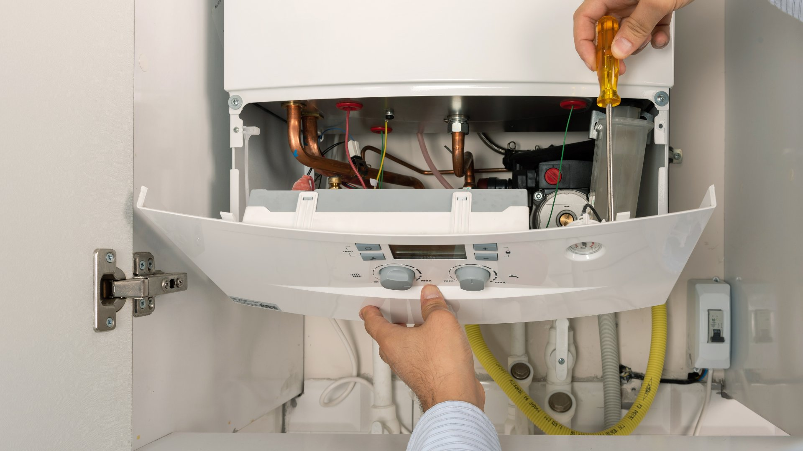

City Plumbing Services covers all of Stockport — from the Victorian terraces of Edgeley and Heaviley to newer developments in Cheadle and Bramhall. Gas Safe registered engineers covering SK1, SK2, SK3, SK4 and surrounding postcodes.
Stockport has some of the most varied housing stock in Greater Manchester. The Victorian and Edwardian terraces of Edgeley, Heaviley, and Davenport were built for mill workers and have original pipework to match — often lead supply pipes, cast iron radiators, and gravity-fed systems that have been partially modernised at various points over the past century. These properties need a plumber who understands older materials and how to work with them, not just replace everything in sight.
Further out, Cheadle, Bramhall, and Hazel Grove have a completely different character — largely post-war semis and detached houses, many of them well-maintained family homes where the priority is a reliable upgrade to the current system. We work across both ends of the Stockport spectrum, from emergency repairs in a draughty Edgeley terrace to a planned bathroom renovation in a large Bramhall detached. The approach is the same: turn up when we say, do the job properly, and leave the place tidy.

All our services are available to Stockport residents, landlords, and property managers across SK1–SK4 and beyond.
Burst pipes, major leaks, no heating — 24/7 across Stockport. Older properties in Edgeley and Heaviley are particularly prone to pipe failures during cold spells — we respond fast, any hour.
Annual services, breakdown repairs, and full boiler replacements. Many Stockport period properties still have back boilers or old floor-standing units — we can advise on the best modern replacement and carry out a clean installation.
Full bathroom renovations across Stockport, from compact terrace bathrooms in Davenport to larger family bathroom upgrades in Cheadle. We manage design, supply, plumbing, and tiling as a complete package.
New heating systems, cast iron radiator replacements, power flushing, and system upgrades. Stockport has more period properties with original cast iron radiators than almost anywhere in Greater Manchester — we can advise on whether to restore or replace.
Dripping taps, leaking pipes, running toilets, low water pressure — no job too small. Same-day availability on most general plumbing work across SK1, SK2, SK3 and SK4.
Stockport has a solid rental market, particularly in Edgeley and around the town centre. We work with landlords across SK1–SK4, carrying out gas safety inspections and issuing CP12 certificates the same day.
Stockport's Victorian and Edwardian housing stock is one of the defining features of the inner postcodes — SK1, SK2, and SK3 in particular. Edgeley, Heaviley, and the streets around Stockport town centre are packed with terraced houses built between 1870 and 1910. These properties have a characteristic plumbing profile: lead supply pipes from the main to the property boundary (sometimes beyond), gravity-fed water systems with cold water tanks in the loft, original or near-original cast iron pipework internally, and heating systems that have been added and modified over many decades.
Cast iron radiators are common in these properties and can last a very long time if maintained correctly. They do, however, need periodic attention. Sludge builds up in older systems faster than in modern sealed systems, and a power flush every few years — combined with a good inhibitor — can add years of life to a heating system that might otherwise need full replacement. We carry out power flushing regularly in Stockport period properties and can assess whether a flush alone will solve the problem or whether something more significant is required.
The SK4 postcode — covering Heaton Moor, Heaton Norris, and Reddish — has a slightly different character. Heaton Moor in particular has some larger Victorian and Edwardian semis that attract professional households. These are often the properties where a more comprehensive upgrade is on the cards — full bathroom renovation, new boiler, smart thermostat — and we're experienced in managing those kinds of multi-stage projects alongside daily life in the home.
Emergency call-outs in Stockport's older housing stock tend to follow cold weather patterns. When temperatures drop below freezing for more than a day or two, we see a spike in burst pipes — particularly in properties where the loft insulation doesn't cover the cold water tank or where pipe runs pass through unheated spaces. If you've had a burst pipe in Stockport, turn off the main stop tap (usually under the kitchen sink), open the cold taps to drain the system, and call us on 0161 000 0000.
City Plumbing Services is Gas Safe registered (reg: 000000), carries £5 million public liability insurance, and has been working in Stockport and across Greater Manchester since 2009.
"Our heating stopped working in the middle of January. City Plumbing came out the same day, traced the fault to a failed pump, and had us back up and running by the evening. The house is an old Edwardian terrace in Edgeley and they knew exactly what they were dealing with. Brilliant service."
Fiona B. — Castle Street, Edgeley, SK3
"Had a new boiler fitted to replace a very old back boiler in our Heaviley terrace. City Plumbing talked us through the options, recommended a Worcester Bosch combi, and the installation was done in a single day. Clean, tidy, and the engineer explained how everything worked before he left. Really pleased."
Andrew P. — Dialstone Lane, Heaviley, SK2
"Fantastic bathroom renovation in our Heaton Moor semi. The team were here five days and the result is incredible — completely transformed. They dealt with some really complex pipework behind the old tiling without a fuss, kept us updated every day, and the price matched the quote exactly. Very professional."
Joanna L. — Heaton Moor Road, SK4